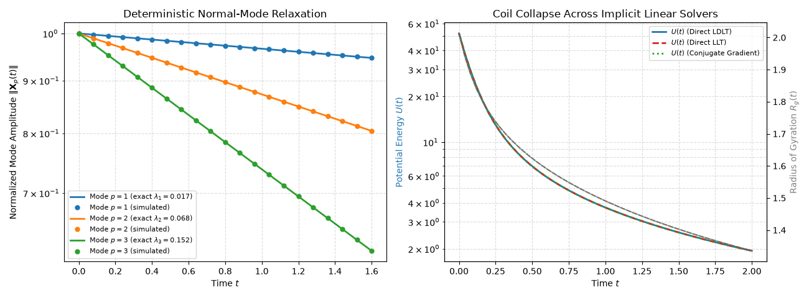
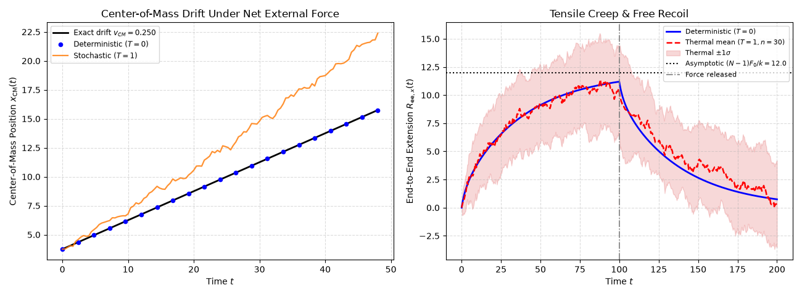
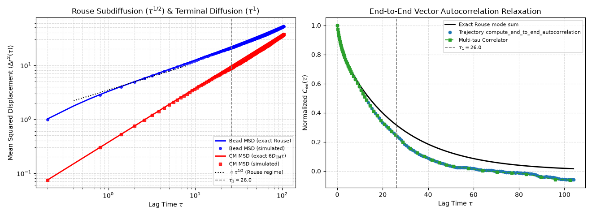

Note
Go to the end to download the full example code.
Rouse & Brownian Dynamics Simulation¶
This example demonstrates how to use
RouseBrownianSimulator to simulate overdamped
polymer chain dynamics with an implicit backward-Euler integrator:
where \(\mathbf{L}\) is the scalar graph Laplacian, \(D = k_B T / \gamma\) is the bead diffusion coefficient, and \(\boldsymbol{\xi}_t\) is standard Gaussian white noise. We demonstrate:
Deterministic normal-mode relaxation and equivalence across
RouseSolverTypelinear solvers.External-force-driven drift and tensile creep/recoil.
Stochastic Rouse dynamics, comparing monomer MSD, center-of-mass MSD, and end-to-end vector autocorrelation (both full-trajectory and multi-tau
Correlator) against exact analytical Rouse theory.
import matplotlib.pyplot as plt
import numpy as np
import pandas as pd
from pylimer_tools_cpp import (
Correlator,
RouseBrownianSimulator,
RouseSolverType,
)
Deterministic Normal-Mode Relaxation & Solver Comparison¶
We first verify parameter/coordinate APIs and deterministic relaxation of individual Laplacian eigenmodes \(p = 1, 2, 3\). Because backward Euler acts diagonally in the normal-mode basis, an initial perturbation along mode \(p\) (eigenvalue \(\lambda_p\)) decays by exact factor \(\mu_p = (1 + \Delta t (k / \gamma) \lambda_p)^{-1}\) per step.
n_beads = 24
gamma_0, k_0, temp_0, dt_0 = 1.0, 2.0, 0.0, 0.02
sim = RouseBrownianSimulator.create_linear_chain(
n_beads, gamma=gamma_0, k=k_0, T=temp_0, dt=dt_0
)
# Exercise parameter getters/setters and restore intended values
sim.set_parameters(2.5, 1.5, 0.5, 0.01)
sim.set_gamma(gamma_0)
sim.set_k(k_0)
sim.set_temperature(temp_0)
sim.set_dt(dt_0)
sim.set_kb(1.0)
assert sim.get_nr_of_nodes() == n_beads
assert np.isclose(sim.get_gamma(), gamma_0)
assert np.isclose(sim.get_k(), k_0)
assert np.isclose(sim.get_temperature(), temp_0)
assert np.isclose(sim.get_dt(), dt_0)
assert np.isclose(sim.get_kb(), 1.0)
assert np.isclose(sim.get_diffusion_coefficient(), (sim.get_kb() * temp_0) / gamma_0)
# Exercise coordinate setters/getters and system matrices
sim.initialize_linear_positions(bond_length=1.0, axis=0)
flat_inter = sim.get_positions_flattened(interleaved=True)
sim.set_positions_flattened(flat_inter, interleaved=True)
L_mat = sim.get_laplacian().toarray()
A_mat = sim.get_shifted_matrix().toarray()
expected_A = np.eye(n_beads) + dt_0 * (k_0 / gamma_0) * L_mat
assert np.allclose(A_mat, expected_A, atol=1e-12)
print(
f"Linear chain (N={n_beads}): initial R_ee = {sim.get_end_to_end_distance():.2f}, "
f"R_g = {sim.get_radius_of_gyration():.3f}, "
f"U = {sim.get_potential_energy():.2f}, "
f"CM = {np.round(sim.get_center_of_mass(), 3)}"
)
# Spectral decomposition of L to excite pure normal modes p = 1, 2, 3
eigvals, eigvecs = np.linalg.eigh(L_mat)
n_mode_steps = 80
mode_indices = [1, 2, 3]
mode_times = np.arange(n_mode_steps + 1) * dt_0
mode_amplitudes: dict[int, np.ndarray] = {}
mode_exact: dict[int, np.ndarray] = {}
for p in mode_indices:
vec = eigvecs[:, p]
pos0 = np.zeros((n_beads, 3))
pos0[:, 0] = vec
sim.set_positions(pos0)
amps = [float(np.linalg.norm(sim.get_positions()[:, 0]))]
for _ in range(n_mode_steps):
sim.step_deterministic(1)
amps.append(float(np.linalg.norm(sim.get_positions()[:, 0])))
mode_amplitudes[p] = np.asarray(amps)
decay_per_step = 1.0 / (1.0 + dt_0 * (k_0 / gamma_0) * eigvals[p])
mode_exact[p] = decay_per_step ** np.arange(n_mode_steps + 1)
# Compare DIRECT_LDLT, DIRECT_LLT, and CONJUGATE_GRADIENT solvers on a random coil
solver_types = [
("Direct LDLT", RouseSolverType.DIRECT_LDLT),
("Direct LLT", RouseSolverType.DIRECT_LLT),
("Conjugate Gradient", RouseSolverType.CONJUGATE_GRADIENT),
]
relax_steps = 100
sample_every = 2
relax_times = np.arange(0, relax_steps + 1, sample_every) * dt_0
solver_energies: dict[str, list[float]] = {}
solver_rgs: dict[str, list[float]] = {}
solver_final_pos: dict[str, np.ndarray] = {}
for label, s_type in solver_types:
s_cmp = RouseBrownianSimulator.create_linear_chain(
n_beads, gamma=gamma_0, k=k_0, T=0.0, dt=dt_0
)
s_cmp.set_solver_type(s_type)
assert s_cmp.get_solver_type() == s_type
s_cmp.initialize_random_walk(bond_length=1.5, seed=99)
energies = [s_cmp.get_potential_energy()]
rgs = [s_cmp.get_radius_of_gyration()]
for _ in range(relax_steps // sample_every):
s_cmp.step_deterministic(sample_every)
energies.append(s_cmp.get_potential_energy())
rgs.append(s_cmp.get_radius_of_gyration())
solver_energies[label] = energies
solver_rgs[label] = rgs
solver_final_pos[label] = s_cmp.get_positions().copy()
ref_pos = solver_final_pos["Direct LDLT"]
solver_rows = []
for label, _ in solver_types:
max_diff = float(np.max(np.abs(solver_final_pos[label] - ref_pos)))
solver_rows.append(
{
"Solver": label,
"Final U": f"{solver_energies[label][-1]:.6f}",
"Final R_g": f"{solver_rgs[label][-1]:.6f}",
"Max |dr| vs LDLT": f"{max_diff:.2e}",
}
)
print("\nSolver equivalence on deterministic coil collapse:")
print(pd.DataFrame(solver_rows).to_string(index=False))
fig, (ax1, ax2) = plt.subplots(1, 2, figsize=(13.0, 4.8))
colors_modes = ["#1f77b4", "#ff7f0e", "#2ca02c"]
for p, col in zip(mode_indices, colors_modes):
ax1.semilogy(
mode_times,
mode_exact[p],
"-",
color=col,
linewidth=2.0,
label=f"Mode $p={p}$ (exact $\\lambda_{p}={eigvals[p]:.3f}$)",
)
ax1.semilogy(
mode_times[::4],
mode_amplitudes[p][::4],
"o",
color=col,
markersize=5,
label=f"Mode $p={p}$ (simulated)",
)
ax1.set_xlabel("Time $t$")
ax1.set_ylabel("Normalized Mode Amplitude $\\|\\mathbf{X}_p(t)\\|$")
ax1.set_title("Deterministic Normal-Mode Relaxation")
ax1.grid(True, which="both", linestyle="--", alpha=0.45)
ax1.legend(frameon=True, fontsize=8.0)
linestyles = {"Direct LDLT": "-", "Direct LLT": "--", "Conjugate Gradient": ":"}
colors_solvers = {
"Direct LDLT": "#1f77b4",
"Direct LLT": "#d62728",
"Conjugate Gradient": "#2ca02c",
}
ax2_rg = ax2.twinx()
for label, _ in solver_types:
ax2.semilogy(
relax_times,
solver_energies[label],
linestyle=linestyles[label],
color=colors_solvers[label],
linewidth=2.0,
label=f"$U(t)$ ({label})",
)
ax2_rg.plot(
relax_times,
solver_rgs[label],
linestyle=linestyles[label],
color=colors_solvers[label],
linewidth=1.4,
alpha=0.65,
)
ax2.set_xlabel("Time $t$")
ax2.set_ylabel("Potential Energy $U(t)$", color="#1f77b4")
ax2_rg.set_ylabel("Radius of Gyration $R_g(t)$", color="gray")
ax2.set_title("Coil Collapse Across Implicit Linear Solvers")
ax2.grid(True, which="both", linestyle="--", alpha=0.45)
ax2.legend(frameon=True, fontsize=8.0, loc="upper right")
plt.tight_layout()
plt.show()

Linear chain (N=24): initial R_ee = 23.00, R_g = 6.922, U = 23.00, CM = [11.5 0. 0. ]
Solver equivalence on deterministic coil collapse:
Solver Final U Final R_g Max |dr| vs LDLT
Direct LDLT 1.936542 1.335431 0.00e+00
Direct LLT 1.936542 1.335431 6.66e-15
Conjugate Gradient 1.936542 1.335431 4.52e-09
Driven Dynamics Under External Forces (Drift & Creep Extension)¶
External bead forces \(\mathbf{F}_{\text{ext}} \in \mathbb{R}^{N \times 3}\)
are handled via
step_deterministic_with_external_forces()
and step_with_external_forces().
A net force \(\mathbf{F}_{\text{tot}}\) drives center-of-mass drift with exact terminal velocity \(\mathbf{v}_{\text{CM}} = \mathbf{F}_{\text{tot}} / (N \gamma)\).
Opposing end-bead forces \(\pm F_0 \hat{\mathbf{e}}_x\) stretch a collapsed chain toward the equilibrium tension length \(\Delta L_\infty = (N - 1) F_0 / k\), followed by free recoil when the force is removed.
n_drive = 16
gamma_d, k_d, dt_d = 1.5, 1.0, 0.4
# 1. Center-of-mass drift under uniform total external force on bead 0
drift_sim = RouseBrownianSimulator.create_linear_chain(
n_drive, gamma=gamma_d, k=k_d, T=0.0, dt=dt_d
)
drift_sim.initialize_linear_positions(bond_length=0.5, axis=0)
f_drift = np.zeros((n_drive, 3))
f_pull = 6.0
f_drift[0, 0] = f_pull
v_cm_exact = f_pull / (n_drive * gamma_d)
n_drift_steps = 120
cm_x_det = [float(drift_sim.get_center_of_mass()[0])]
t_drift = np.arange(n_drift_steps + 1) * dt_d
for _ in range(n_drift_steps):
drift_sim.step_deterministic_with_external_forces(f_drift, 1)
cm_x_det.append(float(drift_sim.get_center_of_mass()[0]))
cm_x_exact = cm_x_det[0] + v_cm_exact * t_drift
# Stochastic thermal drift (T = 1.0)
drift_therm = RouseBrownianSimulator.create_linear_chain(
n_drive, gamma=gamma_d, k=k_d, T=1.0, dt=dt_d
)
drift_therm.initialize_linear_positions(bond_length=0.5, axis=0)
drift_therm.set_seed(77)
cm_x_therm = [float(drift_therm.get_center_of_mass()[0])]
for _ in range(n_drift_steps):
drift_therm.step_with_external_forces(f_drift, 1)
cm_x_therm.append(float(drift_therm.get_center_of_mass()[0]))
# 2. Tensile creep and recoil under opposing end forces +-F_0
f_stretch = 0.8
f_tensile = np.zeros((n_drive, 3))
f_tensile[0, 0] = -f_stretch
f_tensile[-1, 0] = +f_stretch
ree_asymp = (n_drive - 1) * f_stretch / k_d
n_pull = 250
n_recoil = 250
t_creep = np.arange(n_pull + n_recoil + 1) * dt_d
creep_det_sim = RouseBrownianSimulator.create_linear_chain(
n_drive, gamma=gamma_d, k=k_d, T=0.0, dt=dt_d
)
ree_det = [float(creep_det_sim.get_end_to_end_vector()[0])]
for _ in range(n_pull):
creep_det_sim.step_deterministic_with_external_forces(f_tensile, 1)
ree_det.append(float(creep_det_sim.get_end_to_end_vector()[0]))
for _ in range(n_recoil):
creep_det_sim.step_deterministic(1)
ree_det.append(float(creep_det_sim.get_end_to_end_vector()[0]))
# Ensemble of 30 thermal trajectories during creep and recoil
n_ens_creep = 30
ree_therm_all = np.zeros((n_ens_creep, n_pull + n_recoil + 1))
for rep in range(n_ens_creep):
s_th = RouseBrownianSimulator.create_linear_chain(
n_drive, gamma=gamma_d, k=k_d, T=1.0, dt=dt_d
)
s_th.set_seed(1000 + rep)
ree_therm_all[rep, 0] = float(s_th.get_end_to_end_vector()[0])
for step_idx in range(1, n_pull + 1):
s_th.step_with_external_forces(f_tensile, 1)
ree_therm_all[rep, step_idx] = float(s_th.get_end_to_end_vector()[0])
for step_idx in range(n_pull + 1, n_pull + n_recoil + 1):
s_th.step(1)
ree_therm_all[rep, step_idx] = float(s_th.get_end_to_end_vector()[0])
ree_therm_mean = np.mean(ree_therm_all, axis=0)
ree_therm_std = np.std(ree_therm_all, axis=0, ddof=1)
fig, (ax1, ax2) = plt.subplots(1, 2, figsize=(13.0, 4.8))
ax1.plot(
t_drift,
cm_x_exact,
"k-",
linewidth=2.0,
label=f"Exact drift $v_{{CM}}={v_cm_exact:.3f}$",
)
ax1.plot(
t_drift[::6], cm_x_det[::6], "bo", markersize=4.5, label="Deterministic ($T=0$)"
)
ax1.plot(
t_drift,
cm_x_therm,
"-",
color="#ff7f0e",
alpha=0.85,
linewidth=1.6,
label="Stochastic ($T=1$)",
)
ax1.set_xlabel("Time $t$")
ax1.set_ylabel("Center-of-Mass Position $x_{\\mathrm{CM}}(t)$")
ax1.set_title("Center-of-Mass Drift Under Net External Force")
ax1.grid(True, linestyle="--", alpha=0.45)
ax1.legend(frameon=True, fontsize=8.5)
t_release = n_pull * dt_d
ax2.plot(t_creep, ree_det, "b-", linewidth=2.0, label="Deterministic ($T=0$)")
ax2.plot(
t_creep,
ree_therm_mean,
"r--",
linewidth=1.8,
label=f"Thermal mean ($T=1, n={n_ens_creep}$)",
)
ax2.fill_between(
t_creep,
ree_therm_mean - ree_therm_std,
ree_therm_mean + ree_therm_std,
color="#d62728",
alpha=0.18,
label="Thermal $\\pm 1\\sigma$",
)
ax2.axhline(
ree_asymp,
color="black",
linestyle=":",
linewidth=1.5,
label=f"Asymptotic $(N-1)F_0/k = {ree_asymp:.1f}$",
)
ax2.axvline(
t_release, color="gray", linestyle="-.", linewidth=1.2, label="Force released"
)
ax2.set_xlabel("Time $t$")
ax2.set_ylabel("End-to-End Extension $R_{\\mathrm{ee}, x}(t)$")
ax2.set_title("Tensile Creep & Free Recoil")
ax2.grid(True, linestyle="--", alpha=0.45)
ax2.legend(frameon=True, fontsize=8.0, loc="upper right")
plt.tight_layout()
plt.show()

Stochastic Rouse Dynamics: MSD Regimes, Autocorrelation & Correlator¶
We now simulate an equilibrated \(N = 16\) Gaussian Rouse chain at
\(T = 1.0\) (\(k = 1.0, \gamma = 1.0, \Delta t = 0.02\)).
Using run() with
save_trajectory=True, we compare time-averaged
compute_msd(),
compute_center_of_mass_msd(),
and compute_end_to_end_autocorrelation()—as
well as multi-tau correlation via Correlator—against
exact analytical Rouse mode theory:
n_rouse = 16
gamma_r, k_r, temp_r, dt_r = 1.0, 1.0, 1.0, 0.02
diff_r = temp_r / gamma_r
# Analytical Rouse eigenvalues lambda_p and relaxation times tau_p
p_all = np.arange(1, n_rouse)
lam_all = 4.0 * np.sin(np.pi * p_all / (2.0 * n_rouse)) ** 2
tau_all = gamma_r / (k_r * lam_all)
tau_rouse = float(tau_all[0]) # Longest relaxation time tau_1
# Run an ensemble of chains equilibrated first for 5 * tau_rouse
n_traj = 12
eq_steps = int(round(5.0 * tau_rouse / dt_r))
prod_steps = 12000
sample_interval = 10 # sample spacing = 0.2 time units -> 1201 saved frames
msd_runs = []
cm_msd_runs = []
cee_runs = []
corr_curves = []
corr_lags = None
for rep in range(n_traj):
r_sim = RouseBrownianSimulator.create_linear_chain(
n_rouse, gamma=gamma_r, k=k_r, T=temp_r, dt=dt_r
)
r_sim.set_seed(500 + rep)
r_sim.initialize_random_walk(
bond_length=np.sqrt(3.0 * temp_r / k_r), seed=500 + rep
)
r_sim.step(eq_steps) # Equilibrate initial coil before production
res = r_sim.run(
total_steps=prod_steps,
sample_interval=sample_interval,
save_trajectory=True,
)
msd_runs.append(
RouseBrownianSimulator.compute_msd(res.trajectory, time_averaged=True)
)
cm_msd_runs.append(
RouseBrownianSimulator.compute_center_of_mass_msd(
res.trajectory, time_averaged=True
)
)
cee_runs.append(
RouseBrownianSimulator.compute_end_to_end_autocorrelation(
res.trajectory, 0, n_rouse - 1, time_averaged=True
)
)
# Also feed the saved trajectory end-to-end vector into 3 Cartesian multi-tau Correlators
traj = np.asarray(res.trajectory)
r_ee_series = traj[:, -1, :] - traj[:, 0, :]
corrs = [Correlator(num_correlators=14, p=16, m=2) for _ in range(3)]
corr_sum = None
for axis_i in range(3):
corrs[axis_i].add_batch(r_ee_series[:, axis_i])
corrs[axis_i].evaluate(norm=False)
c_vec = corrs[axis_i].correlation
corr_sum = c_vec.copy() if corr_sum is None else corr_sum + c_vec
assert corr_sum is not None
mean_ree_sq = float(np.mean(np.sum(r_ee_series**2, axis=1)))
corr_curves.append(corr_sum / mean_ree_sq)
corr_lags = corrs[0].times * (sample_interval * dt_r)
tau_grid = np.arange(len(res.times)) * (sample_interval * dt_r)
msd_mean = np.mean(msd_runs, axis=0)
cm_msd_mean = np.mean(cm_msd_runs, axis=0)
cee_mean = np.mean(cee_runs, axis=0)
assert corr_lags is not None
corr_mt_mean = np.mean(corr_curves, axis=0)
# Exact analytical Rouse predictions on positive lags
tau_pos = tau_grid[1:]
msd_cm_exact = 6.0 * (diff_r / n_rouse) * tau_pos
msd_bead_exact = msd_cm_exact + (6.0 * temp_r / (n_rouse * k_r)) * np.sum(
(1.0 - np.exp(-tau_pos[:, None] / tau_all[None, :])) / lam_all[None, :],
axis=1,
)
odd_mask = (p_all % 2) == 1
p_odd = p_all[odd_mask]
tau_odd = tau_all[odd_mask]
weights_odd = 1.0 / np.tan(np.pi * p_odd / (2.0 * n_rouse)) ** 2
weights_odd /= np.sum(weights_odd)
cee_exact = np.sum(
weights_odd[None, :] * np.exp(-tau_grid[:, None] / tau_odd[None, :]),
axis=1,
)
print(
f"\nStochastic Rouse chain (N={n_rouse}, tau_1={tau_rouse:.2f}):\n"
f" Single-run result length: {len(res.times)} frames, t_max = {res.times[-1]:.1f}\n"
f" CM MSD at t=tau_1: {cm_msd_mean[np.argmin(np.abs(tau_grid - tau_rouse))]:.3f} "
f"(exact 6*D_CM*tau_1 = {6.0 * diff_r / n_rouse * tau_rouse:.3f})"
)
fig, (ax1, ax2) = plt.subplots(1, 2, figsize=(13.2, 4.8))
# Panel 1: MSD scaling regimes (tau^{1/2} Rouse subdiffusion -> tau^1 CM diffusion)
max_plot_idx = int(np.searchsorted(tau_pos, 4.0 * tau_rouse))
t_p = tau_pos[:max_plot_idx]
ax1.loglog(
t_p,
msd_bead_exact[:max_plot_idx],
"b-",
linewidth=2.0,
label="Bead MSD (exact Rouse)",
)
ax1.loglog(
t_p[::3],
msd_mean[1 : max_plot_idx + 1 : 3],
"bo",
markersize=4,
alpha=0.8,
label="Bead MSD (simulated)",
)
ax1.loglog(
t_p,
msd_cm_exact[:max_plot_idx],
"r-",
linewidth=2.0,
label="CM MSD (exact $6 D_{\\mathrm{CM}} \\tau$)",
)
ax1.loglog(
t_p[::3],
cm_msd_mean[1 : max_plot_idx + 1 : 3],
"rs",
markersize=4,
alpha=0.8,
label="CM MSD (simulated)",
)
# Slope guides: tau^{1/2} and tau^1
t_sub = np.array([0.4, 8.0])
ax1.loglog(
t_sub,
2.2 * (t_sub / t_sub[0]) ** 0.5,
"k:",
linewidth=1.5,
label="$\\propto \\tau^{1/2}$ (Rouse regime)",
)
ax1.axvline(
tau_rouse,
color="gray",
linestyle="--",
linewidth=1.2,
label=f"$\\tau_1 = {tau_rouse:.1f}$",
)
ax1.set_xlabel("Lag Time $\\tau$")
ax1.set_ylabel("Mean-Squared Displacement $\\langle \\Delta r^2(\\tau) \\rangle$")
ax1.set_title("Rouse Subdiffusion ($\\tau^{1/2}$) & Terminal Diffusion ($\\tau^1$)")
ax1.grid(True, which="both", linestyle="--", alpha=0.45)
ax1.legend(frameon=True, fontsize=8.0, loc="lower right")
# Panel 2: End-to-end vector autocorrelation (trajectory vs Correlator vs exact)
max_c_idx = int(np.searchsorted(tau_grid, 4.0 * tau_rouse))
ax2.plot(
tau_grid[:max_c_idx],
cee_exact[:max_c_idx],
"k-",
linewidth=2.0,
label="Exact Rouse mode sum",
)
ax2.plot(
tau_grid[:max_c_idx:4],
cee_mean[:max_c_idx:4],
"o",
color="#1f77b4",
markersize=4.5,
label="Trajectory compute_end_to_end_autocorrelation",
)
mt_mask = corr_lags <= 4.0 * tau_rouse
ax2.plot(
corr_lags[mt_mask],
corr_mt_mean[mt_mask],
"s--",
color="#2ca02c",
markersize=4.5,
linewidth=1.5,
label="Multi-tau Correlator",
)
ax2.axvline(
tau_rouse,
color="gray",
linestyle="--",
linewidth=1.2,
label=f"$\\tau_1 = {tau_rouse:.1f}$",
)
ax2.set_xlabel("Lag Time $\\tau$")
ax2.set_ylabel(r"Normalized $C_{\mathrm{ee}}(\tau)$")
ax2.set_title("End-to-End Vector Autocorrelation Relaxation")
ax2.grid(True, linestyle="--", alpha=0.45)
ax2.legend(frameon=True, fontsize=8.0, loc="upper right")
plt.tight_layout()
plt.show()

Stochastic Rouse chain (N=16, tau_1=26.02):
Single-run result length: 1201 frames, t_max = 240.0
CM MSD at t=tau_1: 8.900 (exact 6*D_CM*tau_1 = 9.758)
Total running time of the script: (0 minutes 1.816 seconds)